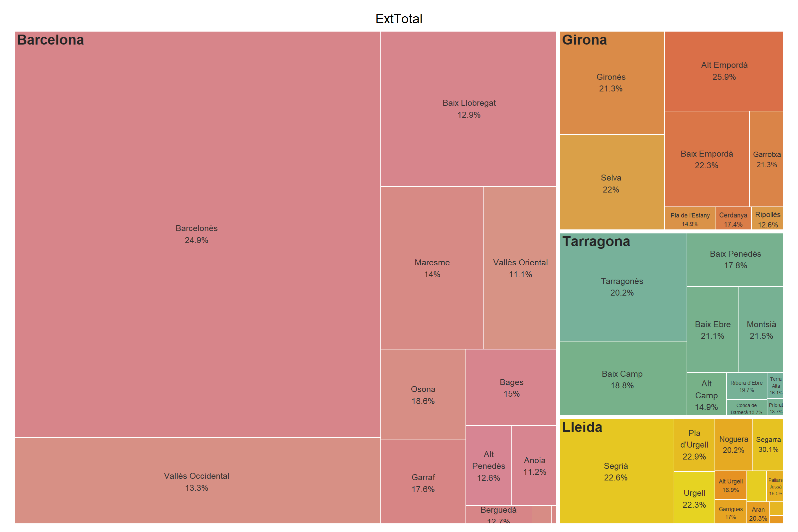

Fuente: Idescat, a partir del Censo de población anual del INE, 1 de enero de 2025.
La técnica treemap fue una idea de Ben Shneiderman en 1990 en la Universidad de Maryland, quería abordar el desafío de identificar y representar grandes conjuntos de datos jerárquicos, los gráficos treemap los muestran como un conjunto de rectángulos anidados. A cada categoría se le asigna un rectángulo que estará cubierto por rectángulos más pequeños asignados a subcategorías. Cada rectángulo tiene un área proporcional a una variable específica, a parte, aplicamos distintos colores a los diferentes rectángulos para representar otras dimensiones, por ejemplo, el grupo al que pertenecen. Se aplican, por ejemplo, en análisis empresarial para comparar cifras de ventas de diferentes modelos de productos. También para ejemplificar temas sociales como, por ejemplo, los tipos de comida consumidos en una parte de la población o las marcas de coche favoritas.
Mediante esta técnica podemos representar una variable categórica sola o con una variable numérica asociada a cada categoría, dos o más variables categóricas anidadas solas o con una variable numérica que al igual que en el caso anterior tenga una sola observación para cada hoja. Vemos que una de las limitaciones es que solo podemos expresar una variable numérica en cada treemap y todas las observaciones numéricas deben ser positivas. En caso de tener más de dos niveles de jerarquía debemos crearlo interactivo para mejorar su lectura.
Ventajas: se pueden representar grandes cantidades de datos aprovechando de manera eficiente el espacio. Inconvenientes: cuesta mucho más comparar áreas que longitudes y en los rectángulos de menor tamaño las etiquetas son ilegibles.